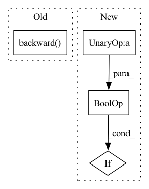

Pattern ID :10607
Before Change
loss = losses
total_loss = losses.item() if total_loss is None else total_loss + losses.item()
self._check_nan(loss)
loss.backward()
if self.clip_grad_norm:
clip_grad_norm_(self.model.parameters(), **self.clip_grad_norm)
self.optimizer.step()
if self.gpu_available and show_progress:After Change
) if show_progress else train_data
)
if not self.config["SingleSpec"] and self.config["shuffle"] :
train_data.sampler.set_epoch(epoch_idx)
for batch_idx, interaction in enumerate(iter_data):In pattern: SUPERPATTERN
Frequency: 4
Non-data size: 4
Instances Fragment ID: 36862208
Project Name: rucaibox/recbole
Commit Name: 4e432bd8334ad85b492c1c619ec3f78f96dfbd5f
Time: 2022-07-05
Author: 1204216974@qq.com
File Name: recbole/trainer/trainer.py
M Class Name: NCLTrainer
N Class Name: NCLTrainer
M Method Name: _train_epoch(5)
N Method Name: _train_epoch(5)
M Parent Class: Trainer
N Parent Class: Trainer
M File Name: recbole/trainer/trainer.py
N File Name: recbole/trainer/trainer.py
M Start Line: 1181
M End Line: 1181
N Start Line: 1222
N End Line: 1243
Before Change
loss = losses
total_loss = losses.item() if total_loss is None else total_loss + losses.item()
self._check_nan(loss)
loss.backward()
if self.clip_grad_norm:
clip_grad_norm_(self.model.parameters(), **self.clip_grad_norm)
self.optimizer.step()
if self.gpu_available and show_progress:After Change
) if show_progress else train_data
)
if not self.config["SingleSpec"] and self.config["shuffle"] :
train_data.sampler.set_epoch(epoch_idx)
for batch_idx, interaction in enumerate(iter_data): Fragment ID: 36862203
Project Name: rucaibox/recbole
Commit Name: 4e432bd8334ad85b492c1c619ec3f78f96dfbd5f
Time: 2022-07-05
Author: 1204216974@qq.com
File Name: recbole/trainer/trainer.py
M Class Name: Trainer
N Class Name: Trainer
M Method Name: _train_epoch(5)
N Method Name: _train_epoch(5)
M Parent Class: AbstractTrainer
N Parent Class: AbstractTrainer
M File Name: recbole/trainer/trainer.py
N File Name: recbole/trainer/trainer.py
M Start Line: 190
M End Line: 190
N Start Line: 205
N End Line: 224
Before Change
actor_loss = loss_fn(actor_output_before, target=T.Tensor([6]))
actor_critic.actor.optimizer.zero_grad()
actor_loss.backward()
actor_critic.actor.optimizer.step()
actor_output_after = actor_critic.actor(input)
critic_output_after = actor_critic.critic(input)After Change
actor=actor, critic=critic, share_encoder=share_encoder, share_torso=share_torso
)
if not share_encoder and not share_torso :
assert actor_critic.actor and actor_critic.critic
else: Fragment ID: 36862206
Project Name: londonnode/pearl
Commit Name: 154b68d1925a7b73086da8bc3e861d06bf841027
Time: 2021-09-13
Author: rohan.tangri@gmail.com
File Name: tests/test_models.py
M Class Name: AnonimousClass
N Class Name: AnonimousClass
M Method Name: test_actor_critic_shared_arch(3)
N Method Name: test_actor_critic_shared_arch(3)
M Parent Class:
N Parent Class:
M File Name: tests/test_models.py
N File Name: tests/test_models.py
M Start Line: 109
M End Line: 142
N Start Line: 123
N End Line: 127
Before Change
grad_scaler.scale(train_loss).backward()
grad_scaler.unscale_(optimizer)
if step_counter > postnet_start_steps:
grad_scaler_postflow.scale(glow_loss).backward()
grad_scaler_postflow.unscale_(optimizer_postflow)
torch.nn.utils.clip_grad_norm_(net.parameters(), 1.0, error_if_nonfinite=False)
grad_scaler.step(optimizer)After Change
optimizer.zero_grad()
optimizer_postflow.zero_grad()
if step_counter > postnet_start_steps and not torch.isnan(glow_loss) :
train_loss = train_loss + glow_loss
grad_scaler.scale(train_loss).backward() Fragment ID: 36862204
Project Name: digitalphonetics/ims-toucan
Commit Name: f602045d362a5da3119066ffc47b09771ed11b7e
Time: 2023-02-05
Author: lux.florian@gmail.com
File Name: TrainingInterfaces/Text_to_Spectrogram/PortaSpeech/portaspeech_train_loop.py
M Class Name: AnonimousClass
N Class Name: AnonimousClass
M Method Name: train_loop(16)
N Method Name: train_loop(16)
M Parent Class:
N Parent Class:
M File Name: TrainingInterfaces/Text_to_Spectrogram/PortaSpeech/portaspeech_train_loop.py
N File Name: TrainingInterfaces/Text_to_Spectrogram/PortaSpeech/portaspeech_train_loop.py
M Start Line: 88
M End Line: 232
N Start Line: 88
N End Line: 219